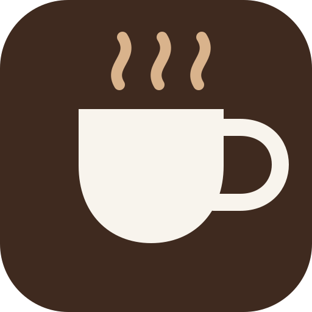

Backup pendente
Há alterações salvas somente neste aparelho.
Atualização disponível
Recarregue para usar a nova versão sem afetar seus cafés.

Seu catálogo está vazio
Cole a análise produzida pela skill do Claude e envie as fotos.